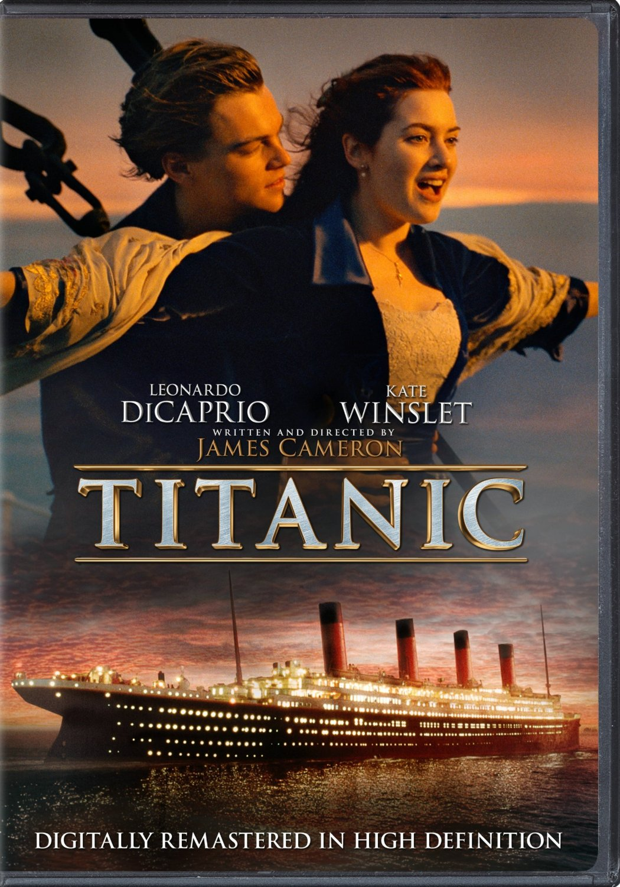
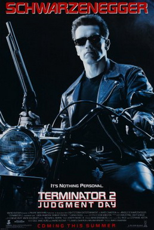

| 1 |
Titaic |
1 noyabr 1997 yil |
1 |
 |
Leanardo DiCaprio |
3 soat 15 minut |
James Cameron |
Titanic filmi |
| 2 |
Avatar |
10-dekabr 2009 yil |
3 |
 |
Sam Worthington |
2 soat 42 minut |
James Cameron , Jon Landao |
Avatar filmi |
| 3 |
O'rgimchak odam, uyga yol yoq |
13-dekabr, 2021-yil |
1 |
 |
Tom Holland |
2 soat va 28 minut |
Kevin Feige , Amy Pascal |
Orgimchak odam |
| 4 |
Harry Potter va hikmatlar toshi |
1997-yil 26-iyunda |
8 |
 |
Daniel Radcliffe |
2 soat 39 minut |
David Heyman |
Harry Potter |
| 5 |
Qasoskorlar, Intiho |
22-aprel, 2019-yil |
1 |
 |
Robert DawneyJr |
1 soat 5 minut |
Kevin Feige |
Qasoskorlar filmi |
| 6 |
Terminator 2: Qiyomat kuni |
1-iyul, 1991-yil |
6 |
 |
Arnold Schwarzenegger |
2 soat |
James Cameron |
Terminator |